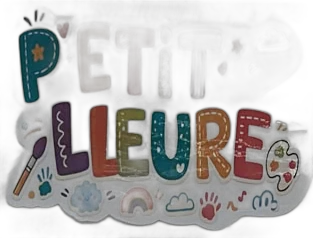
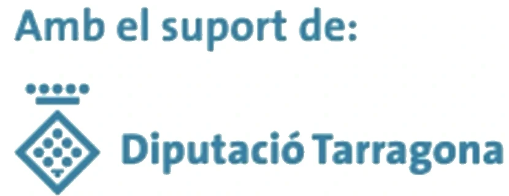
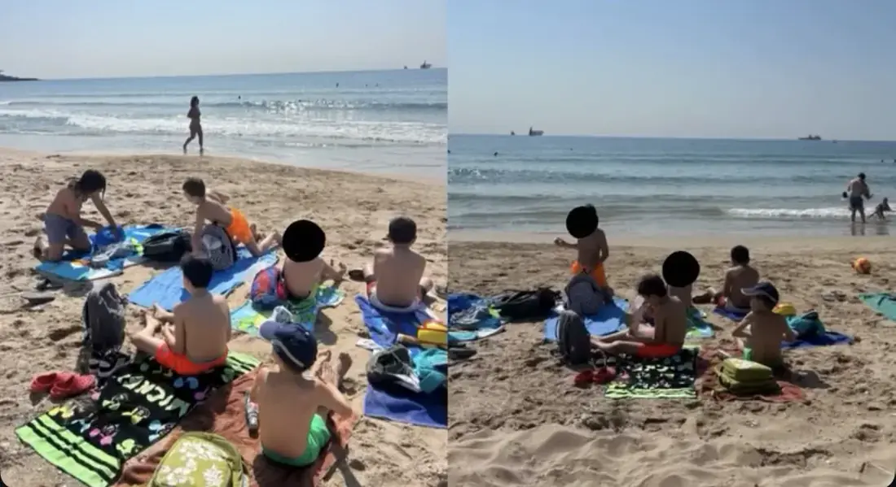
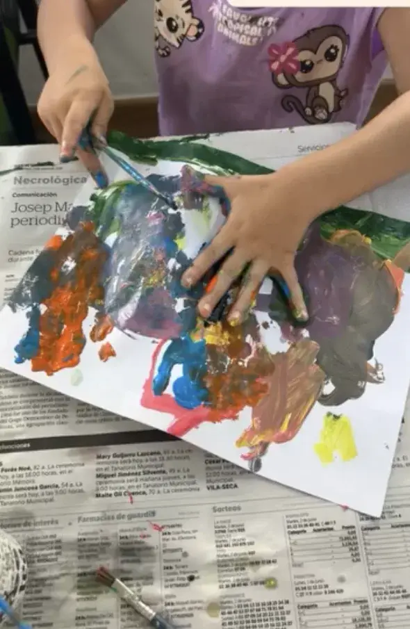
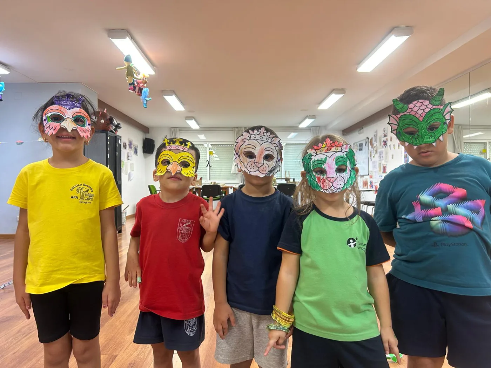
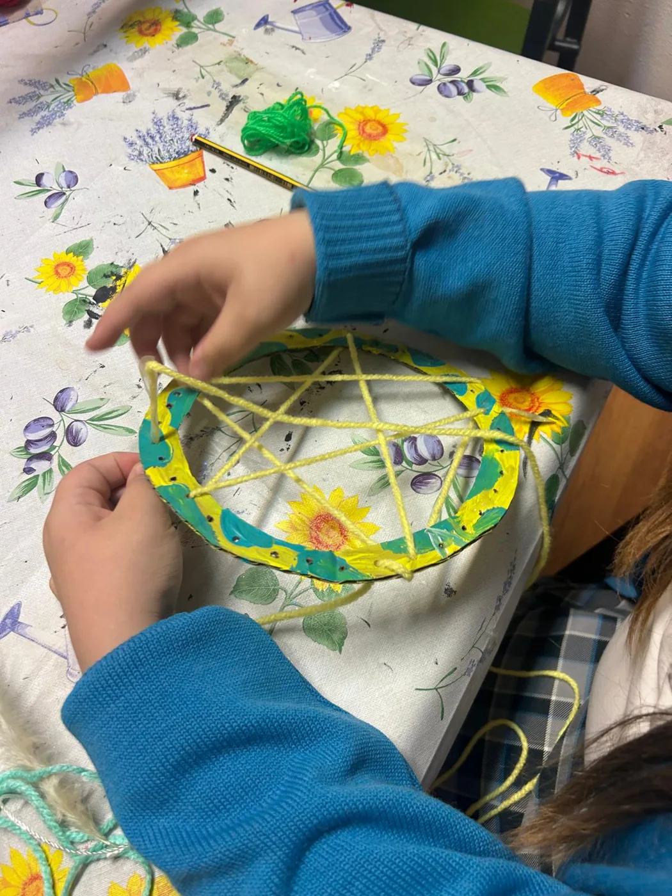
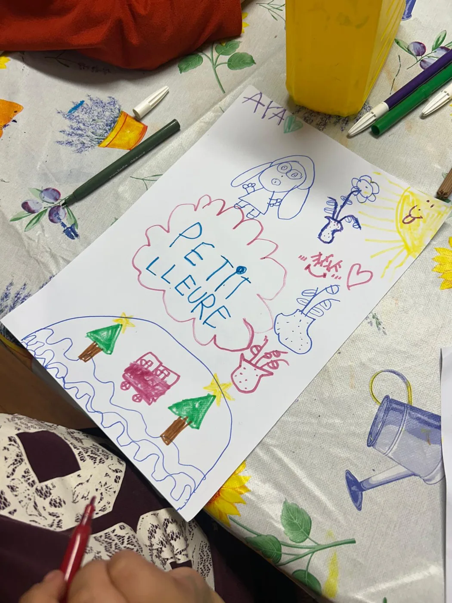
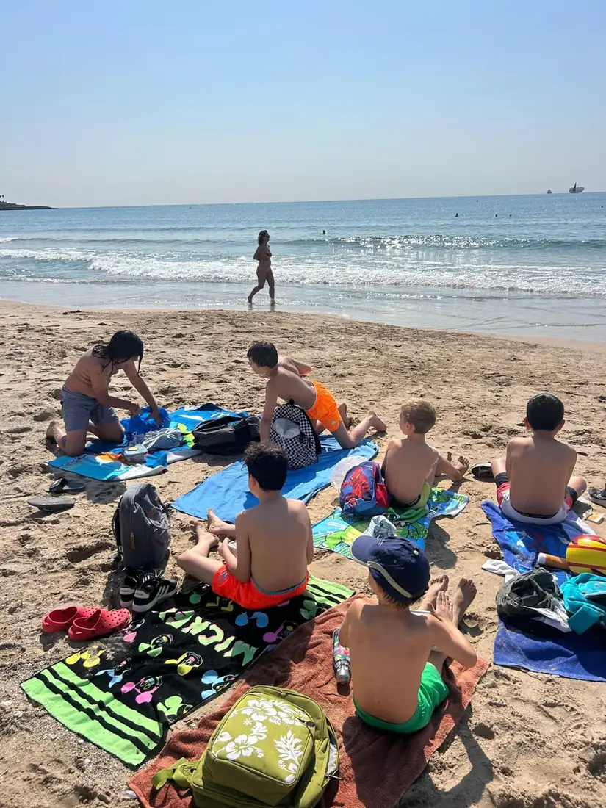

Esplai durant el curs
🕒 Dilluns a dijous · 17:00–19:30 h
Un espai educatiu fora de l'horari escolar on els infants continuen aprenent mentre juguen: habilitats socials, autonomia, convivència, creativitat i educació emocional.
Veure el cartellUn servei socioeducatiu que acompanya infants, adolescents i les seves famílies a través del lleure educatiu. Creiem que jugar també és educar.



Mitjançant activitats lúdiques, creatives, esportives i educatives oferim un entorn segur, inclusiu i participatiu on cada infant pot desenvolupar les seves capacitats, descobrir nous interessos i relacionar-se des del respecte.
El lleure és una eina educativa capaç de generar oportunitats, prevenir situacions de vulnerabilitat i afavorir el desenvolupament integral. Cada participant hi troba un espai on sentir-se escoltat, valorat i protagonista.
Organitzem les activitats en dos grups d'edat per adaptar-nos a cada etapa.
🕒 Dilluns a dijous · 17:00–19:30 h
Un espai educatiu fora de l'horari escolar on els infants continuen aprenent mentre juguen: habilitats socials, autonomia, convivència, creativitat i educació emocional.
Veure el cartell
🕒 Dilluns, dimecres i divendres · 9–13 h
Jocs, gimcanes, esport, tallers creatius, experiments, sortides i activitats d'aigua per a un estiu actiu, educatiu i divertit.
Veure el cartell
🕒 Dilluns, dimecres i divendres · 9–13 h
Tallers nadalencs, manualitats, música, contacontes i jocs cooperatius: la màgia del Nadal també es viu jugant.
Veure el cartellFotos de les activitats d'aquest any.






Els infants són al centre: aprenem experimentant, compartint i reflexionant sobre el que vivim, amb metodologies actives.
Promovem la igualtat d'oportunitats i adaptem les activitats a les necessitats, interessos i ritmes de cada participant.

Mantenim una relació propera amb les famílies, amb comunicació, participació i treball conjunt, i oferim un recurs estable, segur i de qualitat que facilita la conciliació.
L'Espai Petit Lleure desenvolupa les activitats d'acord amb la normativa vigent de lleure educatiu de Catalunya: professionals qualificats, protocols de protecció de la infància i assegurances obligatòries.
Les han creat els mateixos infants amb paper maixé, pas a pas, durant l'esplai d'estiu.


Si vols conèixer els programes, els horaris o les properes activitats, escriu-nos o vine a veure'ns a Pau del Protectorat, 14.